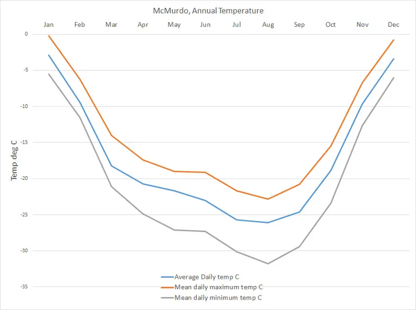

Väderinformation
Kallast temp idag: 4°C
Varmast temp idag: 15°C
Fuktighet: 80%
Starkaste vind: 34 m/s (nordväst)
Känns som -25°C hela dagen
Vind 28-34 m/s (Stark vind)

Kallast temp idag: 4°C
Varmast temp idag: 15°C
Fuktighet: 80%
Starkaste vind: 34 m/s (nordväst)